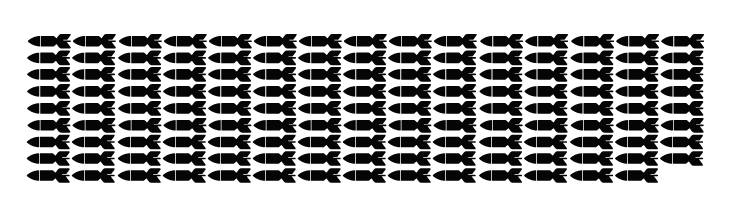

Inicio
Terremoto de 1971
Afectó gravemente a la ciudad de Illapel. Se sintió a lo largo de varias regiones del país. Információn sobre la catástrofe en la siguiente tabla.
Lugar
Fecha
Magnitud
Muertos
Damnificados
Total Energía Liberada (Megatonelada)
Illapel
08-07-1971
7,5 Richter - 10 Mercalli
90
284000
2,7
¿A qué equivale esa energía liberada? Equivale a 134 bombas de Hiroshima. O sea...
